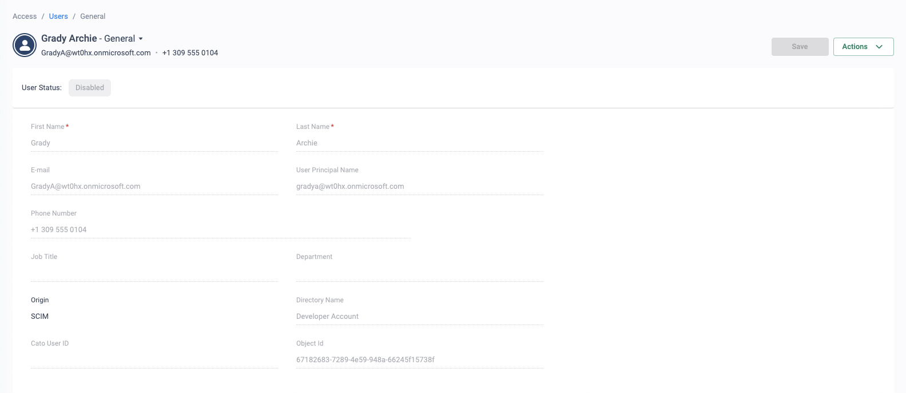
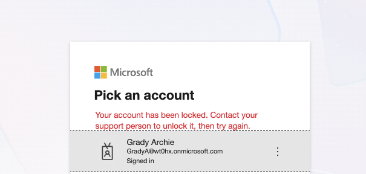
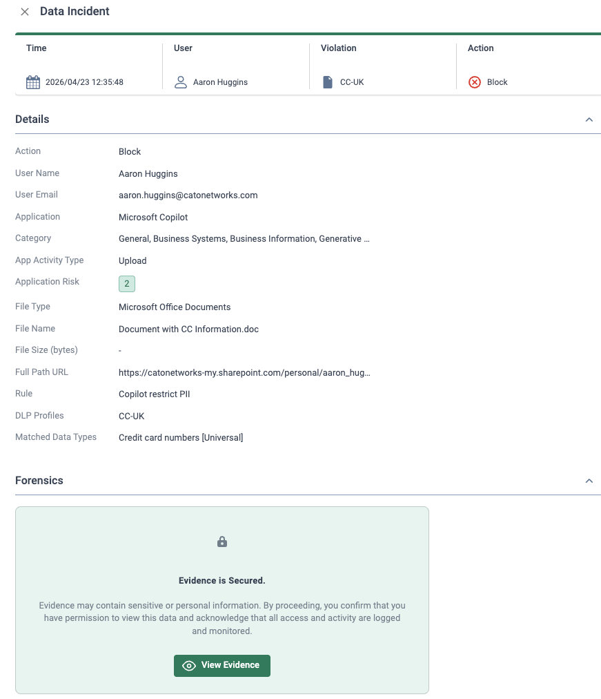
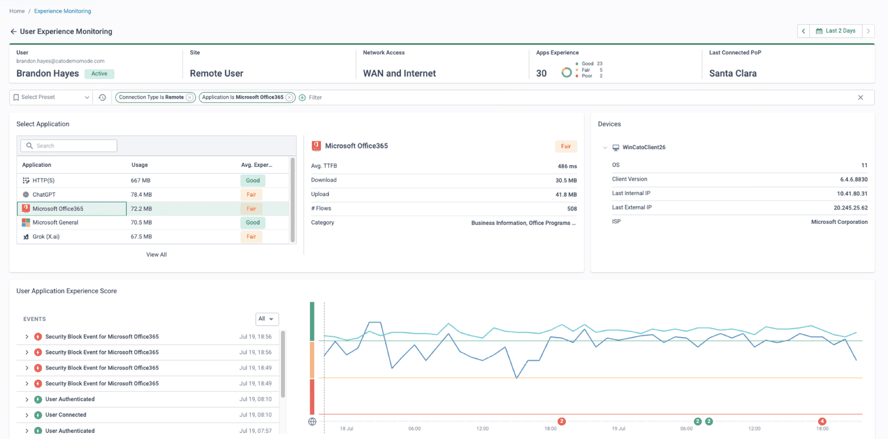

Why this matters
Offshore delivery is now core to how software gets built and customers get served: development centres and contact-centre floors run by outsourcing partners, staffed at scale, often a continent away from the systems they work in. Those teams need deep access — Git repositories and CI pipelines for developers, CRM and VDI for agents — yet they are the population the business controls least: devices owned by the outsourcer or the individual, security posture unknown, and turnover so high that this quarter's access list is already out of date.
Meanwhile the pressure runs the other way. Data-protection regulators and the enterprise's own customers write it into contracts: customer records and source code must stay in-country, inside approved applications, and never persist on the endpoint. The objective is to give every offshore developer and agent fast access to exactly the applications their role requires — while being able to prove that nothing sensitive ever left them.
Scale, churn and sovereignty — on someone else's devices
The offshore reality
- Thousands of developers and agents across multiple delivery partners
- Devices owned by the outsourcer or the individual — not by you
- High staff turnover: joiners and leavers every week, per site
- Deep access required: repos, CI/CD, CRM, VDI, ticketing
- Contracts and regulators demand in-country, off-endpoint data handling
The legacy answer — and why it creaks
- VPN concentrators grant network-level access to unmanaged devices
- VDI farms bolted on as the data-control workaround — for every task
- Long-haul public internet between the floor and the VDI farm: lag, jitter, drops
- Screen latency makes agents slower and developers miserable
- Onboarding and offboarding run on tickets — leavers linger for weeks
What the customer's auditors actually ask for
| Requirement | Legacy answer | With Cato |
|---|---|---|
| Data stays in-country | Hairpin everything through a distant VPN concentrator | Onramp at the nearest PoP; apps stay hosted in-region and traffic egresses there |
| Nothing persists on the endpoint | Full VDI for every user and every task | VDI where it earns its keep; RBI renders risky sessions as pixels; DLP polices uploads and downloads |
| Prove who accessed what | Logs scattered across concentrators, VDI brokers and firewalls | One event store — every flow attributed to a named user and device |
| Leavers lose access same day | Ticket queues and orphaned accounts | Group-based policy from the IdP — one directory change revokes client and portal access |
“Who owns the laptops your offshore teams work on — you, the outsourcer, or the individual? And when an agent leaves on a Friday, how long before every credential, tunnel and portal session they had is actually gone?”
Where this sits in the Cato SASE platform
- Managed contractor laptops run the Cato Client with posture checks; unmanaged seats use a browser portal.
- Both onramp at the nearest PoP, Johannesburg or Sydney, where ZTNA, RBI and CASB/DLP are enforced.
- The private backbone carries repo, VDI and CRM traffic to the region where the apps are hosted.
- DLP blocks source code and customer PII leaving approved apps for personal storage or webmail.
ZTNA, RBI and DLP — delivered from the nearest PoP
Cato treats the offshore estate as two device classes under one policy engine. Managed contractor laptops run the Cato Client and must pass a device-posture check before — and throughout — every session. Outsourcer-owned and personal devices get a clientless browser portal publishing only the applications that group is entitled to, with RBI rendering risky or unmanaged sessions remotely so the endpoint receives pixels, not data. CASB and DLP then keep source code and customer PII inside approved applications, blocking uploads to personal storage inline.
Crucially, all of it runs at the nearest PoP — Johannesburg for a South African delivery centre, Sydney for an Australian one — with the global private backbone carrying VDI, CRM and repository traffic to the region where the apps are hosted. That removes the long-haul public-internet leg that made legacy VDI painful at distance.
What each capability contributes
ZTNA for both device classes
Cato Client with continuous device-posture checks for managed contractor laptops; a clientless portal publishing only entitled apps for outsourcer-owned and personal devices. One policy engine for both.
RBI keeps sessions on-screen only
Risky or unmanaged sessions render in an isolated remote browser — the endpoint receives pixels, not data, and copy, paste, upload and download can be restricted per application.
CASB & DLP around code and PII
Source code, secrets and customer records stay confined to approved applications; uploads to personal cloud storage and webmail are blocked inline, with the evidence logged.
Nearest PoP + private backbone
Agents onramp at Johannesburg or Sydney and ride the backbone to wherever VDI and CRM are hosted — predictable performance instead of long-haul public internet.
Churn absorbed by the directory
Group-based policy from the IdP: joiners inherit access on day one through group membership; leavers lose client and portal access with a single directory change.
Evidence for customers and regulators
Every session and every block attributed to a named user in one event store — the audit trail to hand over when the end customer's due-diligence team comes asking.
Typical offshore/BPO policies — a starter rulebase
Most offshore and BPO engagements converge on the same handful of controls: developers reach code through published app segments and nothing else, agents live inside one CRM on isolated sessions, source code and customer PII never leave approved apps, and group membership from the IdP does the joining and the leaving. The starter set below turns that shape into a small, readable rulebase you can adapt on the whiteboard with a prospect.
These rows were composed for this page to show the pattern; object and group names are generic placeholders, not screenshots of any tenant. Build it monitor-first — deploy the DLP and download rules in a logging/alert mode, watch the events for a few days, then switch to Block — and tune every rule to the specific engagement contract and the data-residency requirements the end customer has written down.
| # | Name | Source (group) | App/Category / Data | Action | Track |
|---|---|---|---|---|---|
| 1 | Devs-Repos-Allow | Offshore-Developers | ZTNA app segments: Git repos & CI/CD only | Allow | Event |
| 2 | Block-SourceCode-Egress | Offshore-Developers | Data type: source code → personal cloud storage / webmail | Block | Alert |
| 3 | Block-PII-Egress | All-Offshore | Data type: customer PII → personal storage / webmail | Block | Alert |
| 4 | Agents-CRM-Only | BPO-Agents | Published app: CRM (clientless portal · RBI for unmanaged seats) | Allow · isolate | Event |
| 5 | No-Download-Unmanaged | BPO-Agents · unmanaged posture | File download from CRM / VDI to the endpoint | Block | Alert |
| 6 | VDI-Priority | All-Offshore | App: VDI (PCoIP / Blast) — bandwidth priority | Allow · QoS priority | Event |
| 7 | Shift-Window (operational) | BPO-Agents | Access enabled during contracted shift hours (see note) | Allow | Event |
| 8 | Delivery-Country-Only | All-Offshore | Client Connectivity: connect only from approved delivery countries | Allow | Event |
| 9 | Leaver-Revoke (SCIM) | Removed from group | Deprovision → all app segments & clientless portal | Deny | Event |
Two honesty notes on rows 7–8. Rather than assume a native time-of-day scheduler, treat the shift window (row 7) as an operational practice — enable or disable the group's access around the contracted hours, scripted through the API if you want it automated — and confirm the exact mechanism with Cato PS for the tenant in question. The delivery-country control (row 8) is source-country awareness in the Client Connectivity Policy, restricting where users may connect from; it is geographic gating of the connection, not a legal guarantee of the user's location.
BPO scenarios
- New engagement ramp-up. A partner needs hundreds of agents live within a week. Provision the BPO-Agents group in the IdP, sync it via SCIM, and every joiner inherits rows 4–8 on first login — no per-user tickets, no re-touching the rulebase as the headcount climbs.
- Client audit of the offshore floor. The end customer's due-diligence team asks who touched their data. One event store answers it: every CRM session, every blocked upload and download, attributed to a named user and device — the evidence handed over without stitching logs from concentrators, VDI brokers and firewalls.
- Contract end. When an engagement closes, disabling or emptying the group revokes rows 1–8 for the whole cohort in one move, and the retained event history is the bulk-revocation evidence — proof the access is gone and a record of what it ever reached.
- Seat-vendor change. A partner swaps unmanaged seats for a managed build. The same users move from the clientless/RBI path (rows 4–5) to Cato Client with a passing posture profile, unlocking fuller access — a group and posture change, not a rebuild of the policy.
How to run the demo
Ask which outsourcers they use, where the floors are, which applications each role touches, and who owns the devices. Pick one real delivery location and one real application pair (repos + VDI, or CRM + VDI) and run the whole demo against that story.
-
Onboard a contractor group
Access → Client Connectivity Policy
Show a rule scoped to an "Offshore-Developers" user group synchronised from the IdP: connection allowed only from the delivery countries, only with a compliant posture profile. Point out that joiners inherit all of this by group membership — no per-user tickets.
-
Show the posture gate
Access → Device Posture
Open the posture profile: EPP/EDR running, disk encryption, OS patch level, client version. The outsourcer's managed build passes; a personal laptop fails — and that failure is what routes the user to the clientless path instead of full access.
-
Clientless portal on an unmanaged device
From a plain browser with no client installed, sign in to the application portal as a BPO agent (MFA via the IdP). Only the published apps — CRM and VDI — appear. Explain that RBI can render the risky session remotely: the device shows pixels, while copy, paste and download stay under policy.
-
Block code exfiltration to personal storage
Security → DLP Configuration
Show a DLP rule matching source-code data types uploaded to personal cloud-storage apps, action Block. Attempt an upload as the developer, then open Monitor → Data Protection Dashboard to walk the incident — user, app, file, rule, verdict.
-
Prove the distance win
Monitor → App Analytics
Filter to the offshore group: traffic lands on the Johannesburg or Sydney PoP and rides the backbone to the hosting region. Contrast that path with the long-haul public-internet route the VDI session would otherwise take — this is why the screen stops lagging.
-
Run a leaver
Access → Users
Remove a user from the contractor group (or disable them) and show client and portal access gone immediately. Finish in Monitor → Events: the leaver's full, attributed history is the audit trail their customers keep asking for.
How to prove it in the customer's tenant
The demo tells the offshore story on demo data; the PoV proves it on one real cohort. Pick a single BPO or ODC team — ten to thirty agents or developers on one floor, in one delivery geography — and pilot them against the applications their engagement contract actually names. The archetype used below is a Johannesburg-served contact-centre team working a UK-hosted CRM and VDI estate; substitute Sydney, or whichever PoP sits nearest the floor, and the shape holds. Agree the criteria below before configuring anything, per Running a Cato PoV: each row is a measurable statement with a named evidence artefact, reviewed at the weekly sync.
| Success criterion | What we prove | Evidence artefact | Where it lives |
|---|---|---|---|
| Named apps and VDI, nothing else | Every cohort session matches a named allow rule for CRM, VDI or ticketing — and an agent's attempted reach to anything off the list lands as a block event attributed to that person | Cohort event export: named-rule allows beside a dated, attributed block | Monitor → Events · Security → WAN Firewall |
| Data provably off the endpoint | BPO-owned seats work through isolated browser sessions — pixels on screen, downloads and copy refused — while the DLP slice logs what the cohort's traffic actually carries | RBI session with a refused download beside the cohort's DLP event slice | Monitor → Events · Monitor → Data Protection Dashboard |
| VDI experience quantified | Per-app experience scores and TTFB for the cohort via the Johannesburg PoP, side by side with the week-zero measurement of the legacy path — the screen-lag argument settled with numbers, not anecdotes | Dated EM drill-down exports for both paths | Monitor → Experience Monitoring |
| Per-agent audit trail | For any named agent, one filtered view answers who reached what, when, under which rule — the artefact the end customer's due-diligence team asks for | Events export filtered to a single identity for the pilot period | Monitor → Events |
| Leavers dead within the sync window | An agent disabled in the IdP cannot connect at the next attempt — and the customer measures the gap between directory change and refused connection rather than taking our word | IdP audit entry timestamped beside the refused connection; no cohort events after that time | IdP console · Access → Users · Monitor → Events |
- The engagement contract is the scope. The named applications — CRM, VDI broker, ticketing, with hosts and ports — and the data-handling clauses the end customer wrote, copied out at the workshop. "Whatever the floor uses" is not a scope.
- Licences — ZTNA/SDP seats covering the cohort for the PoV period, the DLP module, and RBI in scope for the BPO-owned seats.
- Identity first — the cohort exists in the customer's IdP as a dedicated group (the outsourcer's joiner/leaver feed lands there) and provisions to Cato via SCIM before any policy is written (see Identity Integration Design).
- Device reality decided at the workshop — BPO-owned and personal seats take the clientless portal through RBI; the outsourcer's managed build takes the Cato Client with a posture profile. The decision table is in BYOD & Unmanaged Device Access — decide up front, not mid-pilot.
- TLS inspection staged first. The DLP evidence in this pilot needs content inspection on the cohort's traffic — stage it per TLS Inspection: Staged Rollout Playbook before week one, with the outsourcer's privacy owner in the approval chain.
- Week-zero baseline of the legacy path. Before anything moves, measure today's VDI experience from the floor — the latency criterion is a comparison, and the "before" number cannot be collected retrospectively.
- The rest of the floor changes nothing. One team moves; every other team, and the legacy access path, stay exactly as they are.
Configuration walkthrough
-
Pin the cohort in identity
Access → Directory Services Access → Users
Provision the pilot team as a dedicated IdP group (e.g. BPO-Pilot-JNB) via SCIM and confirm the cohort — Thandi and Sipho among them — appears under Users. Every rule below references this synced group, so the same mechanism that onboards the pilot enforces the leaver criterion later: IdP changes reflect in Cato in near real time, users unassigned in the IdP are disabled at the next sync, and a disabled user's ZTNA licence returns to the pool (SCIM User Provisioning).
-
Publish the named apps to the portal — isolated
Security → Internet Firewall
The BPO-owned seats never join the network: register CRM and the VDI web client as Internal Applications in the Applications Portal, enable the RBI service, and add the Internet Firewall rule that opens the portal in an isolated session for the cohort. Agents see the application and work in it, but the session is rendered remotely — they can view data yet cannot download, copy or interact directly with the private network; note that the whole portal opens inside one RBI session (Controlling Access to Private Apps Through RBI).
-
Gate the managed build
Access → Device Posture Access → Client Connectivity Policy
For team leads on the outsourcer's managed laptops: a posture profile — anti-malware plus disk encryption; checks inside a profile combine with AND (Creating Device Posture Profiles and Device Checks) — attached to one Client Connectivity rule: source BPO-Pilot-JNB, countries restricted to the delivery geography, action Allow. The policy is ordered, first-match, and ends in an implicit ANY ANY block, so a connection from an unexpected country or a failed posture check never establishes a tunnel (Configuring the Client Connectivity Policy).
-
Author the named-app WAN rules — monitor-first
Security → WAN Firewall
One allow rule per contracted application: source BPO-Pilot-JNB, destination the named host or app, the specific service/port, tracking set to generate Events on every rule. Beneath them, a week-one discovery rule: cohort → Any, action Allow, tracking Events — it inventories what the team genuinely touches, so the block you enable later is defensible rather than disruptive. Rules evaluate top-down, first-match, over a final implicit ANY ANY block (Managing the WAN Firewall Policy).
-
Lay the DLP slice — monitoring only
Security → DLP Configuration
Build a content profile from the predefined catalogue's country-specific PII data types for the end customer's jurisdictions — each with a tunable occurrence threshold (Working with Predefined Data Types) — plus custom data types (regex, keywords or a trained ML classifier) for the identifiers the contract actually protects, such as the end customer's account-number format; be honest that source-code and proprietary-ID detection is a custom type you build, not an off-the-shelf entry (Working with Custom Data Types). Scope one rule to the cohort with events on and nothing blocking — the fortnight of monitor events is both the tuning set and the keep-data-in-country evidence (Creating the Data Control Policy).
-
Take the experience baseline
Monitor → Experience Monitoring
From day one on Cato, open the cohort users' drill-downs: per-application experience scores built on TTFB and connection metrics, the last connected PoP (Johannesburg for this archetype), and path analysis that separates device, floor Wi-Fi, last mile and the Cato path (The User Experience Monitoring Drill-Down Page). Filter to the VDI application, export dated views weekly, and put them beside the week-zero legacy numbers — on a contact-centre floor, screen lag is handle time, so this is the criterion the outsourcer's operations manager cares about most.
-
Enforcement week — run the three tests
Security → WAN Firewall Monitor → Events
Read the discovery rule's events with the customer, fold anything legitimate into a named rule, then disable the discovery rule so the implicit block takes over. Now the tests: Thandi opens CRM (allow, named rule) then attempts the finance file share (block, attributed, dated — screenshot the pair; every event carries user, rule, action and destination per Understanding Event Fields). Any DLP rows the customer agreed to enforce flip to Block and are proven on a staged test file. And mid-week, the customer disables Sipho at the IdP: record three timestamps — IdP change, refused connection, last event seen — because the leaver criterion is a measured window, not an assurance.

What Sipho's record should show once the IdP change lands (lab tenant, fictional identities): Disabled by the next SCIM sync, origin SCIM, directory-managed — nobody touched the Cato side, which is the point. 
The refusal to expect at his next sign-in (IdP sandbox, fictional identity) — the second of the three timestamps the leaver criterion asks you to record.
What good output looks like



Troubleshooting the pilot
Agent sees an empty portal
Published applications follow group entitlement: either CRM/VDI was never added as an Internal Application in the Applications Portal, or the agent is not in the cohort group. Fix the publication or the membership — never grant individually on a churning floor.
Agents cannot download from CRM
That is RBI doing its job — isolated sessions are view-only, and the whole portal shares one isolated session. If a sub-team genuinely must export files, that is an on-ramp decision to re-make at the workshop table, not an isolation setting to quietly relax.
VDI still lags after cutover
Open the user's path analysis before blaming the backbone: an amber Wi-Fi or last-mile node against a clean Cato path puts the fault on the floor's own network — evidence for the outsourcer's facilities team, and a finding in its own right.
The DLP slice sees nothing
Three usual causes: TLS inspection not yet staged for the cohort, the rule scoped to the wrong group, or data-type thresholds set higher than real traffic reaches. Confirm TLSi first — without content inspection the slice is blind by design.
A disabled leaver comes back to life
The user was disabled in Cato directly and Entra ID re-enabled them at the next sync — the IdP overrides local state (Okta, by contrast, preserves it). Deprovision at the IdP, always; it is exactly why the leaver test disables there.
Blocked from their own named app
The discovery rule came off before the named rules covered everything the app really uses — VDI brokers and auth redirects often ride extra ports. Re-read the discovery events for that destination and fold the missing service/port in — never widen back to Any.
Gotchas & exit
- RBI sessions are view-only. Right for agents living inside one CRM; wrong for a team that must move files. Decide each cohort's on-ramp at the workshop — this pilot proves the isolated pattern, not every pattern.
- The monitor week is an Allow rule. Discovery is Allow-with-Events, so for week one the cohort can still roam; the customer accepts that knowingly — it is what makes the enforcement-week block evidence honest.
- "In-country" evidence is path and policy, not a legal guarantee. The pilot evidences where the cohort onramps, where traffic egresses and which exfiltration routes were refused. Where the applications are hosted — and what the law makes of it — remains the customer's architecture and counsel.
- The sync window is measured, not promised. SCIM reflects IdP changes in near real time, but the leaver criterion records the actual gap between directory disable and refused connection. Quote the number you measured, never "instant".
- Custom data types need their tuning fortnight. A regex for the end customer's account-number format will false-positive before its threshold settles — that is what the monitor-only period is for, and why no DLP row blocks in week one.
Unwinding cleanly: disable the pilot WAN and DLP rules rather than deleting them — their hit counts and events are the evidence record; remove the Client Connectivity rule; unpublish the portal applications and switch off the RBI rule; and de-scope the BPO-Pilot-JNB group from SCIM only if it was created for the PoV. The cohort returns to the legacy path only if the decision is a no — and with a fortnight of attributed allow-and-block evidence, a measured leaver window and the VDI numbers beside the legacy baseline, few decisions are. If it is a yes, the pilot policy is the first team of the floor-by-floor rollout: the next cohort is a group membership, not a rebuild.